Anexos ¶
(R25) Codeception ¶
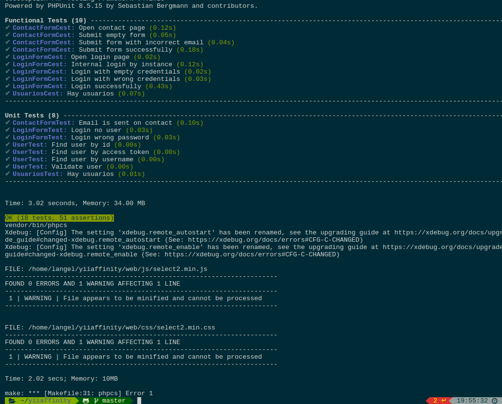
(R26) Code Climate ¶
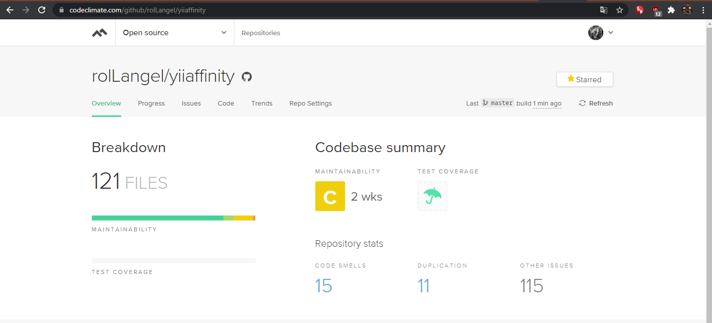
(R33) Microdatos ¶
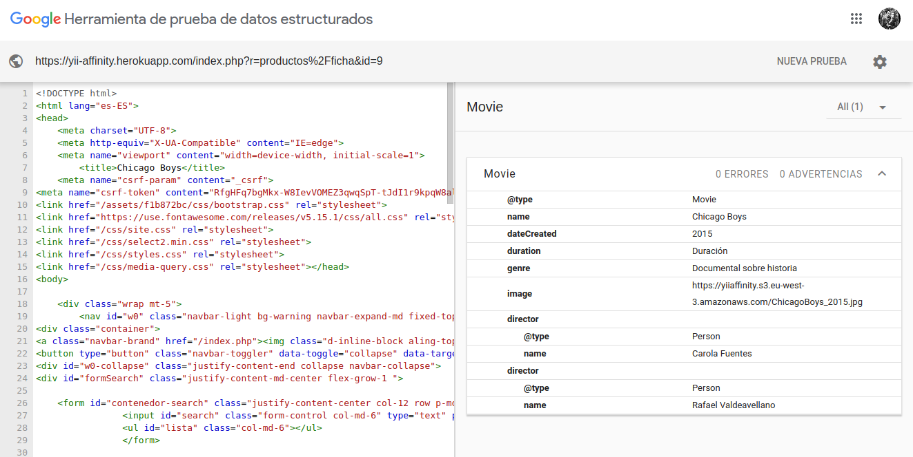
(R34) Validación HTML5, CSS3 y accesibilidad ¶
HTML
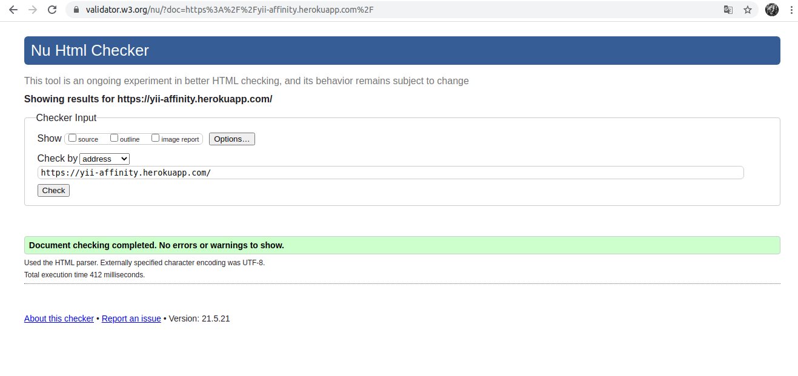
CSS
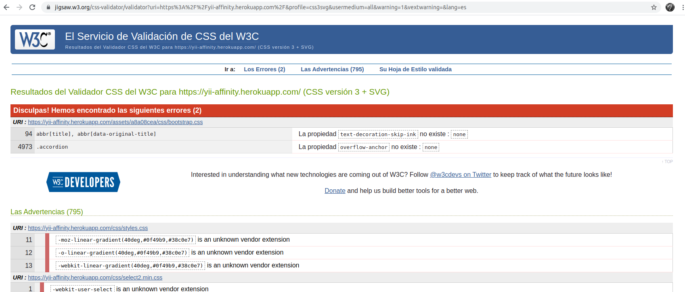
Prueba del seis
¿Qué sitio es este?
Al entrar en la aplicación puede verse en el logotipo y en el pie de página el sitio web en el que se encuentra.
¿En qué ṕagina estoy?
La web cuenta con encabezados que indica donde el usuario está situado, tambien cuenta con la ayudada de la url y las migas de pan.
¿Cuáles son las principoales secciones del sitio?
La principal seccion son las fichas y las críticas
¿Que opciones tengo en este nivel?
En cualquier nivel el usuario tiene acceso a su perfil, sus listas y los usuarios que sigue. A parte tiene un buscador en la parte superior para ir a la ficha que quiera.
El nivel mis listas tiene acceso al nivel lista donde los usuarios pueden añadir esas listas a sus listas o eliminarlas de sus listas.
El nivel Amigos tiene acceso al nivel de buscar amigos donde puede ver usuarios que puede añadir a sus amigos.
El nivel perfil tiene acceso a sus propias valoraciones, sus criticas y sus listas.
El nivel ficha tiene acceso al nivel de hacer criticas y ver criticas de un producto determinado.
Los anteriores niveles cuentan con un boton de volver al nivel anterior
¿Donde estoy en el esquema de las cosas?
Las migas de pan indican en la parte de la aplicacion en la que está situado el usuario.
¿Cómo busco algo?
La aplicación cuenta en todo momento con un buscador de titulos en la parte superior pero en determinadas secciones támbien cuenta con su propio buscador.
(R35) Varias resoluciones ¶
Grande
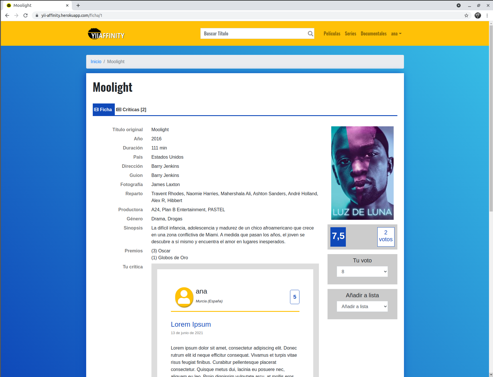
Pequeña
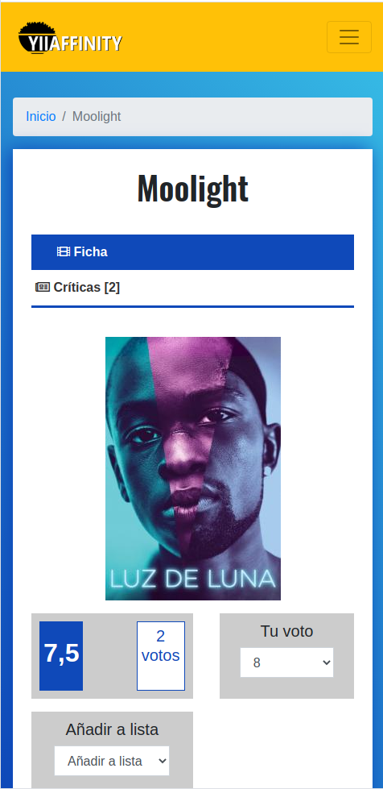
(R36) Varios navegadores ¶
Edge
Firefox
Google Chrome
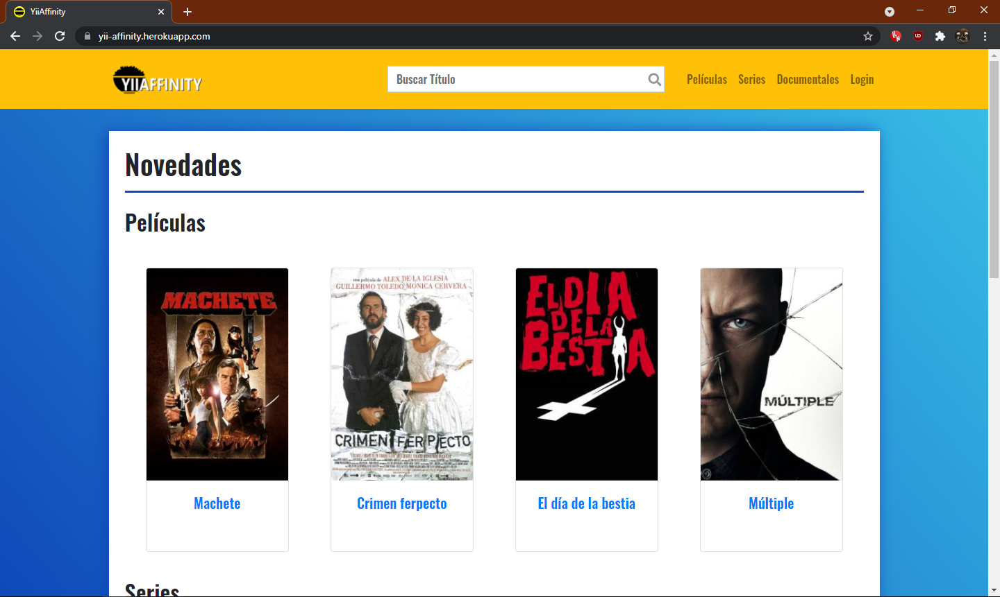
Opera
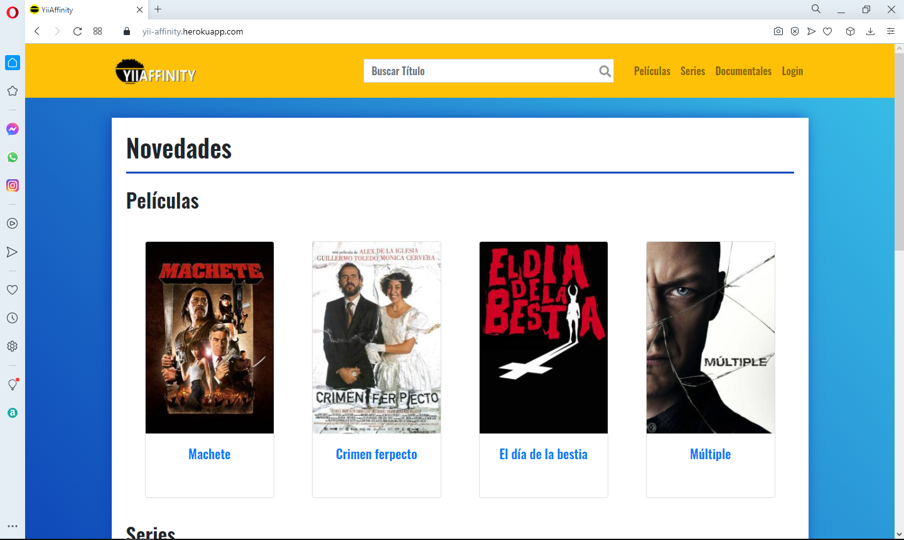
(R38) Despliegue en un servidor local ¶
DHCP ¶
Configuracion de la red
Servidor
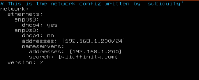
Cliente
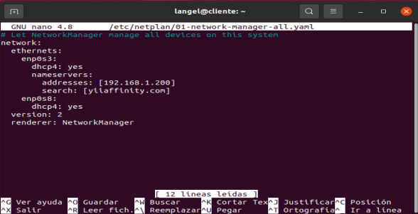
DNS ¶
/etc/bind/named,conf.local
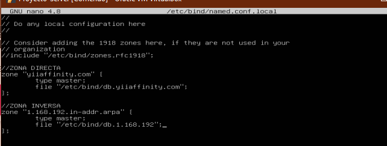
Zona Directa: /etc/bind/db.yiiaffinity.com
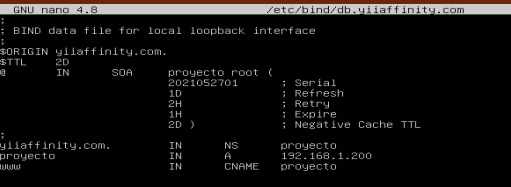
Zona Inversa: /etc/bind/db.1.168.192
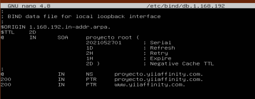
Apache ¶
Configuracion del apache
/etc/apache2/sites-available/000-default.conf

redireccion https:
configuracion mod_speling
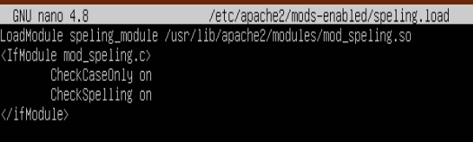
Configuración ssl autofirmada: ¶
Creé la clave privada RSA de 2048 bits
$ openssl genrsa -out yiiaffinity.key 2048Generé una solicitud de certificado CSR
$ openssl req -new -key yiiaffinity.key -out yiiaffinity.csrUna vez hecho lo anterior creé el certificado autofirmado usando la clave privada
$ openssl x509 -req -days 365 -in yiiaffinity.csr -signkey yiiaffinity.key -out yiiaffinity.crtMoví las clave y el certificado a los directorios que usa por defecto apache
$ sudo mv yiiaffinity.key /etc/ssl/private/$ sudo mv yiiaffinity.crt /etc/ssl/certs/
Configuré los permisos
$ sudo chown root:ssl-cert /etc/ssl/private/yiiaffinity.key$ sudo chown 640 /etc/ssl/private/yiiaffinity.key$ sudo chown root:root /etc/ssl/certs/yiiaffinity.crt
Creé el fichero de configuración yiiaffinityseguro.conf
$ sudo nano /etc/apache2/sites-available/yiiaffinityseguro.confHabilité el módulo ssl
$ sudo a2enmod sslHabilité el servidor virtual que creé y configuré anteriormente
$ sudo a2ensite yiiaffinityseguroConfiguración del servidor virtual
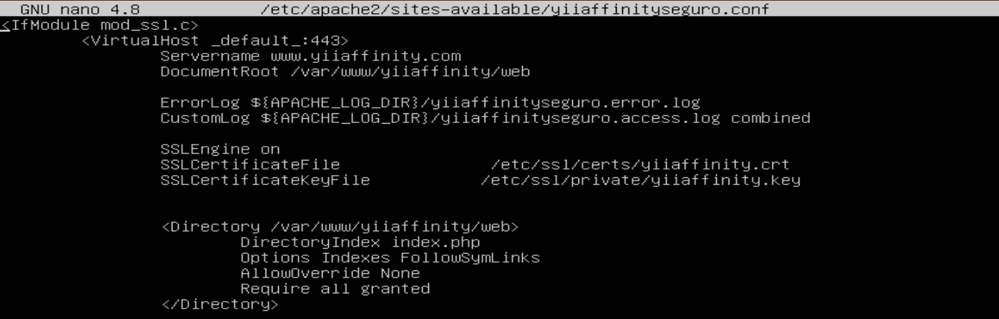
Comprobación:
- speling
- redireccion
certificado ssl
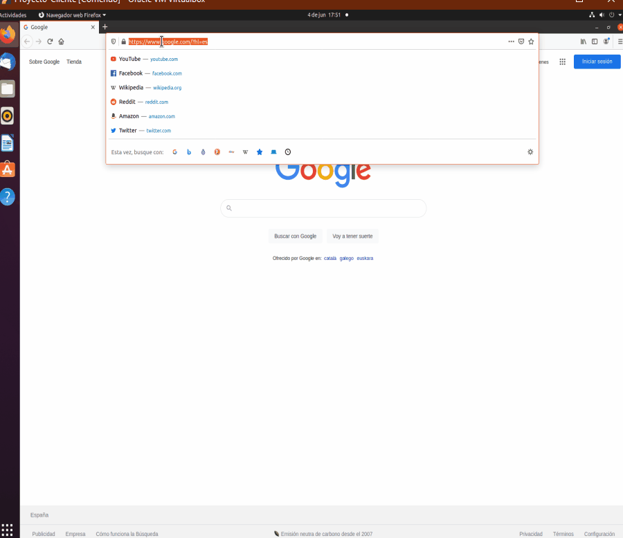
Autenticacion Digest:
(uso de alias para acceder a la documentacion) 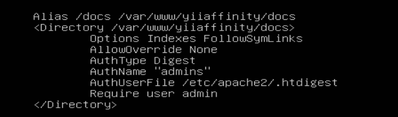
Prueba 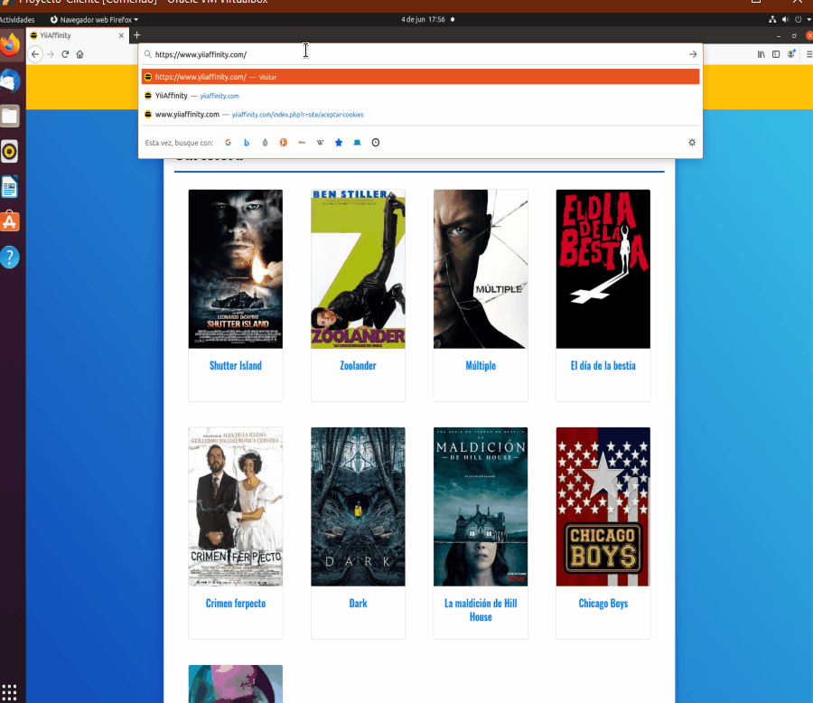
Las dos máquinas funcionando ¶
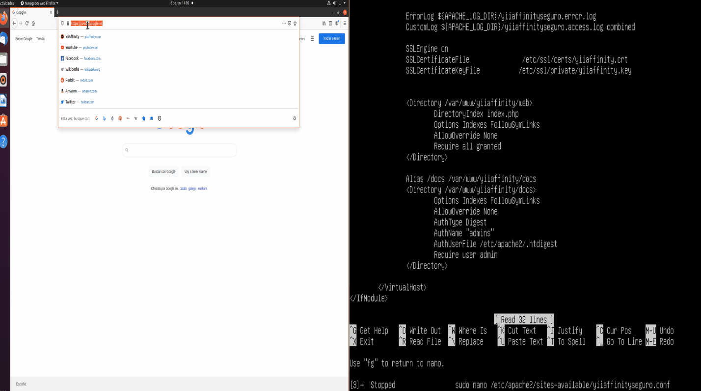